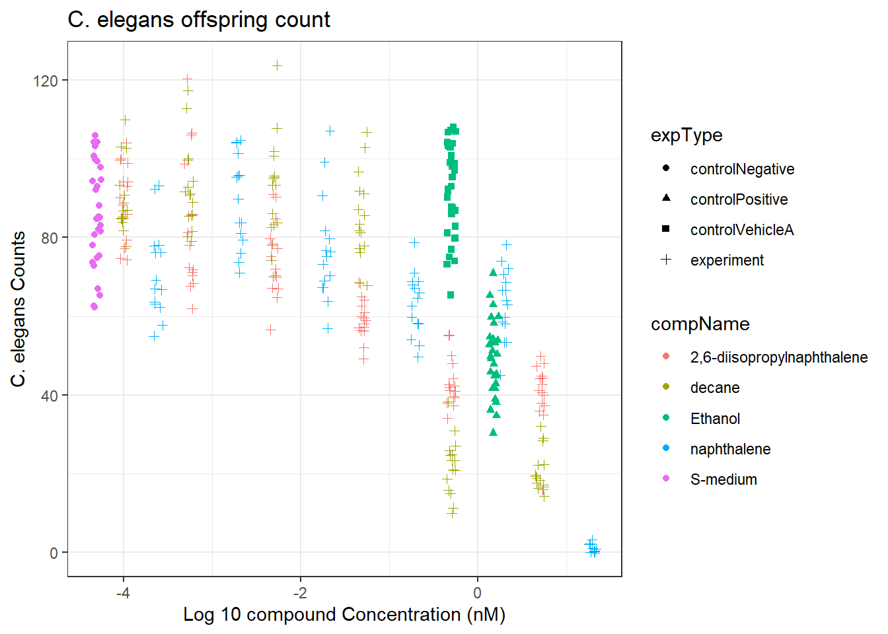

Chapter 2 C. elegans offspring count with different components”
2.2 Importing the data
For this experiment the data from the CE.LIQ.FLOW.062_Tidydata.xlsx file was used to determine the effect of compound concentrations on offspring count and whether the different compounds have a positive effect on the amount of offspring.
After importing the data, the data types of columns were checked to see if these were correctly assigned.
# Loading library
library(tidyverse)
library(readxl)
# Getting the data from the downloaded Excel file
# You can find the raw data in the Data_raw folder of this experiment
elegans_data <- read_excel("~/DSFB2/dsfb2_workflows_portfolio/Portfolio/C.elegans_experiment/Data_raw/CE.LIQ.FLOW.062_Tidydata.xlsx")
# Check if the data imported correctly
head(elegans_data)## # A tibble: 6 × 34
## plateRow plateColumn vialNr dropCode expType expReplicate expName
## <lgl> <lgl> <dbl> <chr> <chr> <dbl> <chr>
## 1 NA NA 1 a experiment 3 CE.LIQ.FLOW.062
## 2 NA NA 1 b experiment 3 CE.LIQ.FLOW.062
## 3 NA NA 1 c experiment 3 CE.LIQ.FLOW.062
## 4 NA NA 1 d experiment 3 CE.LIQ.FLOW.062
## 5 NA NA 1 e experiment 3 CE.LIQ.FLOW.062
## 6 NA NA 2 a experiment 3 CE.LIQ.FLOW.062
## # ℹ 27 more variables: expDate <dttm>, expResearcher <chr>, expTime <dbl>,
## # expUnit <chr>, expVolumeCounted <dbl>, RawData <dbl>, compCASRN <chr>,
## # compName <chr>, compConcentration <chr>, compUnit <chr>,
## # compDelivery <chr>, compVehicle <chr>, elegansStrain <chr>,
## # elegansInput <dbl>, bacterialStrain <chr>, bacterialTreatment <chr>,
## # bacterialOD600 <dbl>, bacterialConcX <dbl>, bacterialVolume <dbl>,
## # bacterialVolUnit <chr>, incubationVial <chr>, incubationVolume <dbl>, …# Check data types of specific columns
str(elegans_data$RawData)## num [1:360] 44 37 45 47 41 35 41 36 40 38 ...str(elegans_data$compName)## chr [1:360] "2,6-diisopropylnaphthalene" "2,6-diisopropylnaphthalene" ...str(elegans_data$compConcentration)## chr [1:360] "4.99" "4.99" "4.99" "4.99" "4.99" "4.99" "4.99" "4.99" "4.99" ...The data type of the column compConcentration has not been correctly assigned during the importing of the data into R. Therefore we need to change the data type of this column.
# Change column data type to numeric
elegans_data_tidy <- transform(elegans_data, compConcentration = as.numeric(compConcentration))
# Check if it is correctly assigned
str(elegans_data_tidy$compConcentration)## num [1:360] 4.99 4.99 4.99 4.99 4.99 4.99 4.99 4.99 4.99 4.99 ...After making the data from the excel file tidy a scatterplot is created to study the data of the plate experiment more thoroughly.
2.3 Scatterplot of the C. elegans plate experiment
# Load library
library(ggplot2)
# Creating the scatterplot
elegans_data_tidy %>% ggplot(aes(x=log10(compConcentration+0.00005), y= RawData))+ #Adding 0.0005 to prevent data loss
geom_jitter(aes(colour=compName, shape = expType), width = 0.05)+
theme_bw()+
labs(title = "C. elegans offspring count", x = "Log 10 compound Concentration (nM)", y = "C. elegans Counts")
The positive control for this experiment is ethanol. The negative control for this experiment is S-medium.
To analyse if there is indeed an effect of different concentrations on offspring count and whether the different compounds have a different curve it is advisable to make a dosis-response curve (IC50). To make this curve you need to follow the next few steps:
1. Normalize the data to the controlNegative condition.
2. Fit a dose-response curve to the data for each compound using a four-parameter logistic model.
3. Estimate the IC50 value for each compound based on the fitted curve.
4. Compare the IC50 values across the different compounds to see if there are any differences in growth of the C. elegans offspring.
5. Perform statistical tests to determine whether there is a significant effect of concentration on offspring count for each compound.
You want to normalize the data to ensure that any differences we observe in the data between the different compounds and concentrations are not simply due to differences in the overall baseline level of the response.
2.4 Normalizing the data
# Calculate the normalization factor
norm_factor <- mean(elegans_data_tidy$RawData[elegans_data_tidy$expType == "controlNegative"])
# Normalize the data
elegans_data_tidy$Normalized <- elegans_data_tidy$RawData / norm_factor
# Setting the negative control value to 1
elegans_data_tidy$Normalized[elegans_data_tidy$expType == "Negative Control"] <- 1
# Creating the plot with the normalized data
elegans_data_tidy %>% ggplot(aes(x = log10(compConcentration+0.00005), y = Normalized)) +
geom_jitter(aes(colour= compName, shape= expType), width = 0.05)+
labs(title = "Normalized C. elegans offspring count", x = "Compound Concentration (nM)", y = "Normalized C. elegans Counts")
Based on the graphs above there can be concluded that 2.6-diisopropylnaphtalene, decane and nepthalene all cause a decrease in the amount of C. elegans offspring.